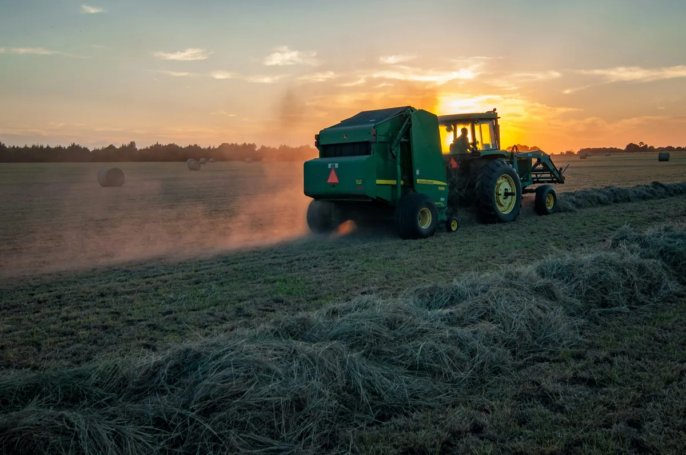

Economic Principles in Agribusiness
Learning Objectives
- Define agribusiness and explain its scope
- Describe how micro and macroeconomic principles apply to agricultural businesses
- Explain the concepts of supply, demand, and pricing in agricultural markets
What is Agribusiness?

Agribusiness refers to all the economic activities related to agriculture — from producing food to processing it, packaging it, transporting it, and selling it to consumers. It covers the entire chain from "farm to fork."
Agribusiness is not just farming. It includes:
- Input supply — selling seeds, fertilisers, pesticides, and farm equipment to farmers
- Production — actual farming of crops, livestock, and fish
- Processing — turning raw agricultural products into processed goods (e.g. cocoa beans into chocolate, coffee cherries into roasted coffee)
- Distribution and logistics — transporting and storing products from farm to market
- Retail and marketing — selling final products to consumers
Microeconomics in Agribusiness
Microeconomics studies the behaviour of individual businesses, farmers, and consumers in making economic decisions. Key concepts:
- Cost of production — the total money spent to produce a crop or raise animals (seeds, fertiliser, labour, equipment)
- Revenue — the money earned from selling products
- Profit — revenue minus total costs. A farm must be profitable to be sustainable
- Break-even point — the minimum production or selling price needed to cover all costs
- Opportunity cost — the benefit lost when choosing one option over another. For example, if a farmer chooses to grow sweet potato instead of cabbage, the forgone profit from cabbage is the opportunity cost
Macroeconomics and Agriculture
Macroeconomics looks at the economy as a whole — including the agricultural sector's contribution to the national economy. Key concepts:
- Gross Domestic Product (GDP) — the total value of goods and services produced in a country. Agriculture contributes significantly to PNG's GDP
- Exports and imports — countries export products they produce efficiently and import what they cannot produce well. PNG exports coffee, cocoa, and palm oil and imports many manufactured goods
- Government policy — subsidies, tariffs, and regulations affect what farmers produce and at what price
Supply, Demand, and Agricultural Prices
Agricultural markets are governed by supply and demand:
- Supply — how much of a product farmers are willing and able to sell at a given price. When prices are high, farmers are encouraged to produce more
- Demand — how much of a product consumers are willing and able to buy at a given price. When prices fall, people buy more
- Market price — the price at which supply and demand balance (equilibrium)
Agricultural prices are particularly unstable because:
- Weather affects supply — a drought or flood can dramatically reduce output
- Demand for food is relatively fixed — people need to eat regardless of price
- Global commodity prices fluctuate — coffee and cocoa prices are set on international markets
Key Terms
📝 Summary — What You Should Know
- Agribusiness covers the entire chain from producing agricultural goods to selling them to consumers
- Microeconomics focuses on individual farm decisions — costs, revenue, profit, and opportunity cost
- Macroeconomics looks at agriculture's role in the national economy — GDP, exports, and government policy
- Agricultural prices are determined by supply and demand, but are unstable due to weather and global markets
- Papua New Guinea's key agribusiness export sectors include coffee, cocoa, oil palm, and rubber
Check Your Understanding
Answer all questions then submit to see how you did.
1. What does agribusiness include?
2. What is the break-even point?
3. Which of the following describes an opportunity cost?
4. Why are agricultural prices particularly unstable?
5. Which are Papua New Guinea's key agribusiness export crops?